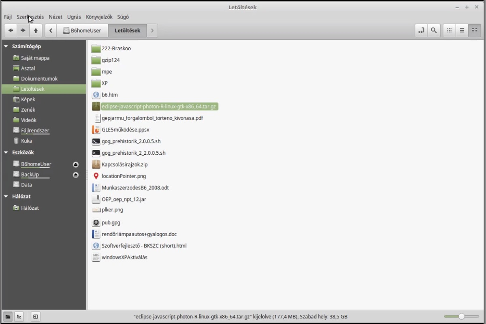
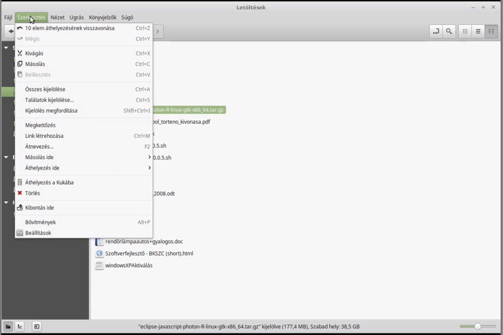
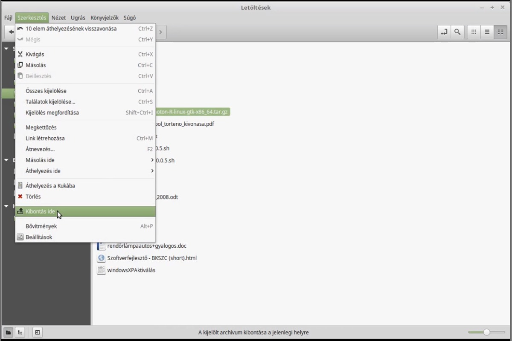
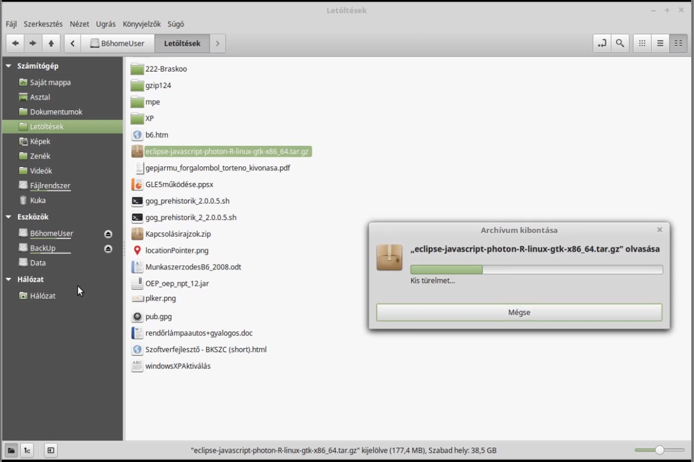
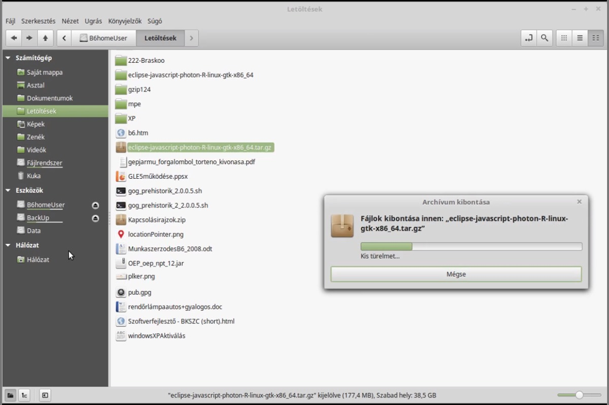
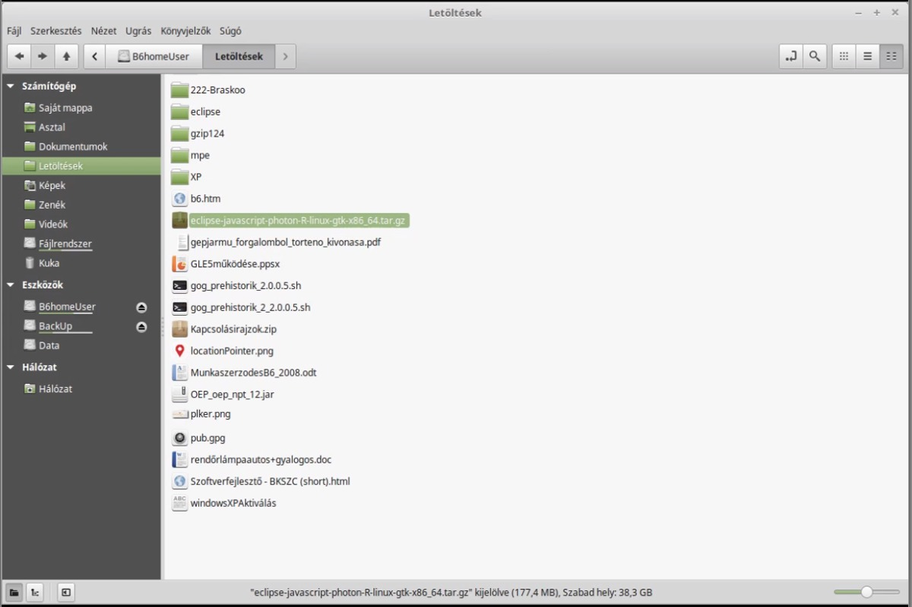

Ha letöltöttél vagy egyéb módon beszereztél egy szoftvercsomagot, akkor azt archivált (azaz tarred) és tömörített (azaz gzipped) formátumban
.tar.gz vagy .tgz kiterjesztéssel* (* .tar == tömörítetlen archívum fájl ; .gz == gzip használatával tömörített fájl ) kaptad meg.
Példánkban
a JavaScript és Web Fejlesztők részére készített Eclipse IDE-t telepítjük.
Először másoljuk át a Saját mappa könyvtárba, majd csomagoljuk ki.
I. Használhatjuk a Parancssor eszközt (Terminált)!
A Terminál fókuszában megnyitásakor a Saját mappa könyvtár van. Ellenőrizük a könyvtár tartalmát:
user@host ~ $ ls
A listában szerepelnie kell a telepítő csomagnak:
eclipse-javascript-photon-R-linux-gtk-x86_64.tar.gz
Ha a csomag elérhető a könyvtárban, akkor utasítást adhatunk a kibontásra. A kibontásra utasító parancsok értelmezése a következő:
-z az archívum kezelése a gzip paranccsal történik
-x az archívumot kibontani kell
-v a folyamat során képernyőre kerül a feldolgozás menete a fájlok listázásával
-f data.tar.gz a fájlok a data.tar.gz nevű archívumból kerülnek kiolvaásra
Ez az eclipse-javascript-photon-R-linux-gtk-x86_64.tar.gz archívum esetén a következőképpen néz ki:
user@host ~ $ tar -xvzf eclipse-javascript-photon-R-linux-gtk-x86_64.tar.gz
Újabb listázás után láthatjuk a kitömörített mappát a Terminálban:
user@host ~ $ ls
eclipse eclipse-javascript-photon-R-linux-gtk-x86_64.tar.gz
II. Használhatjuk a Fájlkezelő eszközt!
A. Jelöljük ki a telepítő csomagot, majd válasszuk Szerkesztés menü Kibontás ide alpontját






B. Jobb klikk a Fájlkezelőben a telepítő csomagra, majd a felbukkanó menü panelben rákattintunk a Kibontás ide pontra.
A kibontás után helyezzük át az eclipse mappát a Saját mappa könyvtárba
és a telepítés befejezéseként készítsünk az Eclipse futtatásához parancsikont a főmenüben!